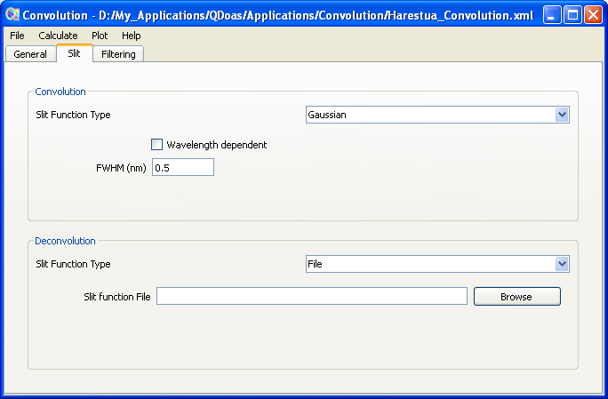

QDOAS Convolution/Filtering Tool : Slit page

This page is dedicated to the selection and the parameterisation of the convolution slit function. This page is dedicated to the selection and the parameterisation of the convolution slit function. User-defined slit functions and different analytical line shapes (Gaussian, Lorentzian, Voigt, error functions, asymmetric gaussian) are accepted. The wavelength dependency of the slit function parameters characterized by the wavelength calibration procedure can be saved from the plot page in order to be accounted for the convolution. Check the Wavelength dependent button to enter file instead of numbers. It is also possible to use File option and enter a look up table of slit functions defined at specific wavelengths.
Refer to the Description of Algorithms part of the QDOAS Software User manual for further information on the supported analytical line shapes.
A deconvolution slit function can also be defined. In this case, the high resolution cross-section is convolved using an effective slit function obtained from the FT of convolution and deconvolution slit functions. This feature doesn’t work if a wavelength dependent slit function is selected. By default, no deconvolution is applied.